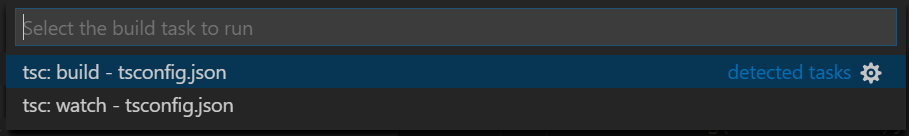

Introdução
Instalar
Introdução
Objetivo:
Este documento descreve como instalar e configurar typescript no vscode.
Pre-requisitos:
VsCode precisa estar instalado e configurado o básico.
Familiaridade com ide vscode.
Nodejs precisa estar instalado e configurado.
Conhecimento da linguagem typescript.
Conhecimento da linguagem javascript.
Benefícios:
Typescript permite criar código javascript isento de erros de sintaxe.
Instalar
Instalar gerenciador de pacotes npm
O programa npm é um gerenciador de pacotes do nodejs.
sudo apt install npm
Instalar o compilador TypeScript
O Visual Studio Code inclui suporte à linguagem TypeScript, mas não inclui o compilador TypeScript tsc,. Você precisará instalar o compilador TypeScript globalmente ou em seu espaço de trabalho para transpilar o código-fonte do TypeScript para JavaScript ( tsc HelloWorld.ts).
Instalação do pacote npx
O programa npx executa programas da pasta local node_modules/.bin ou central, instalando todos os pacotes necessários para que o programa funcione.
O npx é um package runner do NPM. Ele executa as bibliotecas que podem ser baixadas do site npmjs. Essas bibliotecas ficam em um banco de dados chamado NPM Registry, que também podem ser baixadas via CLI com npm ou yarn e com npx. Veja mais....
Código ShellScript
#!/bin/sh
sudo npm install -g npx
Instalação do pacote webpack.
webpack é usado para compilar módulos JavaScript. Depois de instalado , você pode interagir com o webpack a partir de sua CLI ou API.
Código ShellScript para instalação global:
sudo npm install -g webpack
Código ShellScript para instalação local por projeto:
#!/bin/sh
mkdir webpack-demo // cria pasta do novo projeto
cd webpack-demo // move-se para a pasta no novo projeto
npm init // Cria o arquivo package.json do projeto.
npm install webpack webpack-cli --save-dev
Instalar a ferramenta tsc-init.
O programa tsc-init é uma ferramenta para inicializar TypeScript e Webpack em seu projeto. Veja webpack getting-started.
Código ShellScript para instalação global:
npm install tsc-init -g
Código ShellScript para instalação local por projeto:
npm install tsc-init
O programa tsc-init executa os seguintes comandos na pasta raiz do projeto:
Execute npm init para criar o arquivo package.json;
Execute tsc --init para criar um arquivo tsconfig.json;
Adicionar webpack, ts-loader e TypeScript como dependências de desenvolvimento;
Adicione Karma, karma-jasmine, Karma-webpack como dependências de desenvolvimento;
Crie um arquivo webpack.config.js para incluir ts-loader;
Crie um arquivo karma.conf.js;
Crie um arquivo .gitignore;
Execute git init;
Adicione scripts npm para construir e agrupar;
Instalar a ferramenta ESlint:
O ESLint é uma ferramenta para identificar e relatar os padrões encontrados no código ECMAScript/JavaScript, com o objetivo de tornar o código mais consistente e evitar bugs.
Código ShellScript para instalação local:
npm install --save-dev eslint
npm install --save-dev @typescript-eslint/parser
npm install --save-dev @typescript-eslint/eslint-plugin
Veja como usar ESLint com TypeScript...
Instalar a ferramenta TypeDoc
O programa TypeDoc converte comentários do código-fonte TypeScript em documentação HTML renderizada ou um modelo JSON.
Código ShellScript:
# Install
npm install typedoc
# Execute typedoc on your project
npx typedoc src/index.ts
# Use os argumentos --out ou --json para definir o formato e o destino de sua documentação.
typedoc --out docs src/index.ts
.
Extensões do vscode.
A extensão ESLint usa a biblioteca ESLint instalada na pasta da área de trabalho aberta. Se a pasta não fornecer um, a extensão procurará uma versão de instalação global. Se você não instalou o ESLint local ou globalmente, faça-o executando npm install eslint na pasta do espaço de trabalho para uma instalação local ou npm install -g eslint global.
A extensão Visual Studio IntelliCode fornece recursos de desenvolvimento assistido por AI para desenvolvedores Python, TypeScript / JavaScript e Java no Visual Studio Code, com insights baseados na compreensão do contexto do código combinado com o aprendizado de máquina.
A extensão JavaScript (ES6) code snippets contém trechos de código para JavaScript na sintaxe ES6 para o editor de código Vs (suporta JavaScript e TypeScript).
A extensão TypeScript Importer procura automaticamente por definições de TypeScript em arquivos de espaço de trabalho e fornece todos os símbolos conhecidos como itens de preenchimento para permitir o preenchimento de código.
A extensão Latest TypeScript and Javascript Grammar é o ramo de desenvolvimento da colorização VSCode JS/TS. Projeto gitHub: https://github.com/Microsoft/TypeScript-TmLanguage/issues.
A extensão Paste JSON as Code Copy JSON, paste as Go, TypeScript, C#, C++ and more.
A extensão TSDoc Comment é uma extensão para converter comentários simples no estilo C/C++ em comentários no estilo TSDoc
Configurar o compilador TypeScript:
Arquivo tsconfig.json na raiz do projeto é usado para customizar o comportamento padrão do compilador tsc:
Arquivo tsconfig.json criado pelo comando ShellScript tsc --init:
{
"compilerOptions" :
{
"target": "es6",
"module": "commonjs",
"strict": true,
"esModuleInterop": true,
"skipLibCheck": true,
"forceConsistentCasingInFileNames": true,
"outDir": "out",
"sourceMap": true //Permite compilar e depurar com vscode
}
}
Opções:
A propriedade "target": "es6" informa ao tsc a sintaxe javascript a ser gerada. Obs: Se sua aplicação depende de browser mais antigo informe a sintaxe apropriada.
A propriedade "module": "commonjs" define o sistema de módulo para o programa. Consulte a página de referência dos módulos para obter mais informações. Muito provavelmente você deseja "CommonJS" para projetos de nó.
A propriedade "strict": true ative todas as opções de verificação de tipo restrita.
A propriedade "esModuleInterop": true permite a interoperabilidade de emissão entre o módulo CommonJS e o módulos ES por meio da criação de objetos de namespace para todas as importações. Implica 'allowSyntheticDefaultImports'.
A propriedade "skipLibCheck": true, ignora a verificação de tipo de arquivos de declaração.
A propriedade "forceConsistentCasingInFileNames": true proibi referências com capitalização inconsistente para o mesmo arquivo.
A propriedade "outDir": "out" informa a pasta de saída dos arquivos .js.
A propriedade "sourceMap": true permite a geração de arquivos sourcemap. Esses arquivos permitem que os depuradores e outras ferramentas exibam o código-fonte TypeScript original ao trabalhar realmente com os arquivos JavaScript emitidos.
Por padrão, o TypeScript inclui todos os *.ts arquivos na pasta e subpastas atuais se as propriedades outDir, outfile, files, extends, include, references e exclude, não forem incluídas no arquivo tsconfig.json.
A forma mais prática para criar o arquivo tsconfig.json é executar o código abaixo:
Código ShellScript
tsc --init
Agora, para construir a partir do terminal, você pode simplesmente digitar tsc e o compilador TypeScript saberá olhar tsconfig.json para as configurações do seu projeto e opções do compilador e irá compilar o programa informado na propriedade main do arquivo package.js.
Compilador versus serviço de linguagem:
Como configurar compilador tsc (typescript) para executar e depurar com vscode?.
Configuração do arquivo tsconfig.json:
Código json
{
"compilerOptions" :
{
"outDir": "out", //Código compilado fica nesta pasta.
"sourceMap": true //Permite compilar e depurar com vscode
}
}
Configuração do arquivo tasks.json
Transpile TypeScript para JavaScript usando vscode.
Etapa 1: Criar um arquivo TS simples
Abra o VS Code em uma pasta vazia e crie um helloworld.ts arquivo, coloque o seguinte código nesse arquivo:
let message: string = 'Hello World';
console.log(message);
Para testar se você tem o compilador TypeScript tsc instalado corretamente e um programa Hello World em funcionamento, abra um terminal e digite tsc helloworld.ts. Você pode usar o Terminal Integrado ( Ctrl + ` ) diretamente no VS Code.
Agora você deve ver o helloworld.js arquivo JavaScript transpilado , que pode ser executado se o Node.js estiver instalado, digitando:
node helloworld.js
Etapa 2: Execute o build # do TypeScript
Execute Executar Tarefa de Compilação ( Ctrl + Shift + B ) no menu Terminal global . Se você criou um tsconfig.json arquivo na seção anterior, ele deve apresentar o seguinte seletor:

Selecione a entrada tsc: build . Isso produzirá um arquivo HelloWorld.jse HelloWorld.js.map na área de trabalho.
Se você selecionou tsc: watch, o compilador TypeScript observará as alterações em seus arquivos TypeScript e executará o transpilador em cada alteração.
Nos bastidores, executamos o compilador TypeScript como uma tarefa. O comando que usamos é:tsc -p .
Etapa 3: Tornar o TypeScript Build o padrão:
Você também pode definir a tarefa de construção do TypeScript como a tarefa de construção padrão para que seja executada diretamente ao acionar Executar Tarefa de Construção ( Ctrl + Shift + B ).
Para fazer isso, selecione Configure Default Build Task (Ctrl + Shift + P) no menu global Terminal . Isso mostra um seletor com as tarefas de construção disponíveis. Selecione TypeScript tsc : build , que gera o seguinte tasks.json arquivo em uma .vscode pasta:
{
// See https://go.microsoft.com/fwlink/?LinkId=733558
// for the documentation about the tasks.json format
"version": "2.0.0",
"tasks": [
{
"type": "typescript",
"tsconfig": "tsconfig.json",
"problemMatcher": [
"$tsc"
],
"group": {
"kind": "build",
"isDefault": true
}
}
]
}
Observe que a tarefa tem um objeto JSON "group" que define a tarefa "kind": "build" e torna o padrão na propriedade "isDefault": true. Agora, ao selecionar o comando Executar Tarefa de Compilação ou pressionar ( Ctrl + Shift + B ), você não será solicitado a selecionar uma tarefa e sua compilação será iniciada.
ATENÇÃO:
Mais detalhes pode ser visto em: https://code.visualstudio.com/docs/typescript/typescript-compiling.
Teclas de atalho do vscode
Exemplos.
Exemplo 01 - Usa o terminal de comandos para compilar.
Código typescript:
let message: string = 'Hello World';
console.log(message);
Olhe o código TypeScript acima e observe a palavra let e string são da linguagem TypeScript e não pertence ao javascript.
Para compilar o arquivo helloworld.ts selecione o terminal integrado ( Ctrl + ` ) do vscode e execute o código abaixo:
//Obs: tsc é o compilador typescript
tsc helloworld.ts
Código ShellScript:
// node é o interpretador javascript
node helloworld.js
Se você abrir helloworld.js, verá que não é muito diferente de helloworld.ts. A informação de tipo foi removida e let agora é var..
Código javascript:
var message = 'Hello World';
console.log(message);
.
...
REFERÊNCIAS
A Microsoft criou o padrão de documentação TSDoc - para a linguagem typescript com objetivo de que vários aplicativos possam gerar documentos do código em que a tag de um atrapalhe a tag de outro. É parecido com jsDoc.
O projeto api-extractor.com é um gerador de site typescript que espera a sintaxe TSDoc nos comentários do projeto. Reconhece também a linguagem markdown.
O projeto jsdoc.app é um gerador de documentos baseados nos comentários do código javascript e usa sintaxe jsdoc na qual o tsdoc foi estendido. O vídeo jsdoc descreve com muita clareza o uso do jsdoc.
O projeto docstrap.github.io gera site baseado nos comentários dos arquivos javascript e espera a sintaxe do jsdoc. Para instalar siga os passos descritos aqui.
HISTÓRICO
19/02/2021
22/02/2021
04/03/2021
27/04/2021
28/04/2021